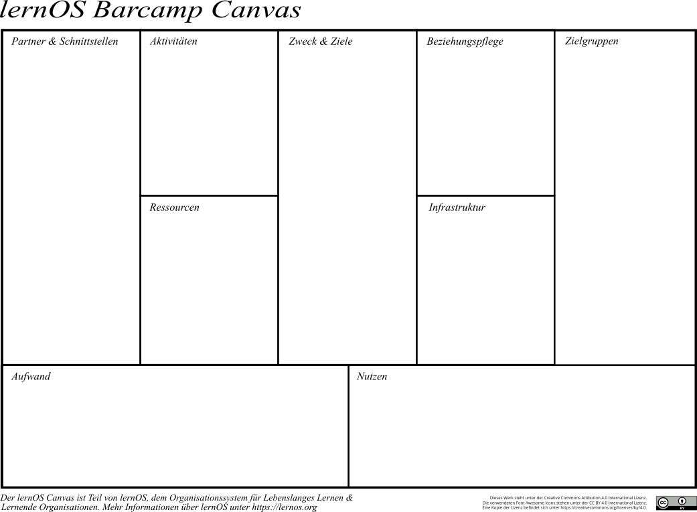

BarCamp Lernpfad
Organisatoren Checkliste
... für das Kick-off und den Regeltermin ...
Kata: Get started (SD)
Mache dich mit den Grundlagen des Podcastings über das Grundlagen-Kapitel sowie die weiterführenden Literatur- und Weblinks vertraut.
Kata: Besuche ein BarCamp und studiere Barcamps aus der Ferne (KHP)
Wie oben beschrieben, ist das besondere Klima ein wesentlicher Erfolgsfaktor für gelungene BarCamps. Diese andere Art des Miteinander-Umgehens muss erst hergestellt werden. Das setzt aber eine innere Haltung der Veranstalter voraus, die glaubwürdig bei den Teilgebenden ankommt. Dieses "Loslassen-Können", das "Zutrauen" und das "Vertrauen" lässt sich nicht vermitteln, das kann man sich nur selber erarbeiten.
Ein möglicher Weg dahin ist, mehrere BarCamps persönlich zu erleben. Mehrere schon deshalb, weil nicht alle BarCamps "eine Seele" haben, bei denen das gute Klima gleich spürbar ist. Achte bei Deinen Besuchen darauf, wie die Kommunikation im Vorfeld des BarCamps läuft, wie Einführung morgens abläuft, was besonders betont wird, und wie die Teilgebenden darauf reagieren.
Der "Aktivitätsgrad" der Teilgebenden eines BarCamps ist auch ein Indikator für die Qualität eines BarCamps.
- Wieviel Sessions sind im Verhältnis zur Zahl der Teilgebenden entstanden?
- Etwa wie viele der Teilgebenden haben sich in den Sessions mit Beiträgen beteiligt?
- Wie viele Berichte (Dokumentationen, Twitter, Blogs, Soziale Medien, Fotos, Videos, ...) haben die Teilgebenden erstellt?
- Wie hast Du das Klima empfunden? Wie war der Umgangston in den Sessions und danach?
- War die Zusammensetzung der Teilgebenden divers? Gab es geteamnügend verschiedene Sichtweisen?
- Hat das Selbstorganisationsprinzip uneingeschränkt gewirkt?
- Fasse Deine persönlichen Eindrücke von mindestens 3 BarCamps gegenüberstellend zusammen
- Was sollte bei Deinem BarCamp unbedingt besser laufen?
- Sprich über Deine Eindrücke mit mindestens einem BarCamp-Kenner.
Vielleicht findest Du gut dokumentierte BarCamps, die Du auch aus der Ferne zusätzlich ein wenig auswerten kannst.
Kata: Fülle den BarCamp Canvas aus (SD)
... Beschreibungstext des Canvas ...

Kata: Erstelle den BarCamp-Steckbrief (KHP)
Ein BarCamp ist eine Konferenz, nur anders gestaltet. Als Veranstalter hast Du die Verantwortung dafür, dass sich die Konferenz für die Teilgebenden gelohnt haben wird. Deshalb ist es wichtig, Dir und allen Beteiligten klar zu machen, was das BarCamp bewirken soll, in welchem Rahmen das abläuft, wen es ansprechen soll, wie es finanziert wird, usw.
Gib dafür Antworten auf folgende Fragen:
- Langtitel / Kurztitel / Hashtag: Thema/Themen-BarCamp
- Motto oder Untertitel:
- Wer ist Veranstalter?
- Wen kann man dazu ansprechen?
- Termin und Ort:
- Ziel und Zweck des BarCamps:
- Zielgruppen:
- Ziel-Teilgebenden-Zahl:
- Argumente, warum es sich für Teilgebende lohnt mitzumachen:
- Ticket-Kosten
Kata: Führe das BarCamp-OrgaTeam Kick-off durch (KHP)
Jede Konferenz will gut vorbereitet sein, auch eine Unkonferenz BarCamp. Bei BarCamps übernimmt das üblicherweise ein OrgaTeam. Suche dir vier bis sechs Monate vor dem geplanten BarCamp 3 bis 6 Personen, die die oben beschriebenen Rollen übernehmen wollen und lade sie zu einem ersten Treffen für das BarCamp-OrgaTeam ein. Das geht auch in einer Stunde online.
So wie wir beim BarCamp davon ausgehen, dass die Teilgebenden den Tag gut und vernünftig gestalten gestalten werden, mit dem gleichen Zutrauen solltest du auch den OrgaTeam-Mitgliedern entgegengehen. Gehe davon aus, dass jeder im OrgaTeam seine Aufgaben selbständig und ohne weitere Abstimmung erledigen wird. (Übrigens: Jede Abstimmung im Team vervielfacht ja den Arbeitsaufwand.) "Handeln - nicht fragen, aber informieren" ist die Devise für alle im OrgaTeam.
Deshalb ist es besonders wichtig, gleich zu Beginn mit allen im OrgaTeam ein gemeinsames Verständnis zu Absichten und Ablauf des BarCamps zu gewinnen. Verwende genügend Zeit darauf
- die BarCamp-Prinzipien zu besprechen
- Ziel und Zweck des BarCamps zu diskutieren
- über Zielgruppen und Teilgebenden-Zahlen zu sprechen
Besprich den Aufgabenplan und bitte die OrgaTeam-Mitglieder, bis zum nächsten Treffen eine der oben beschriebenen Rollen (Checkliste) zu wählen. Vereinbare auch gleich regelmäßige Termine für die gegenseitige Information - am besten online mit jeweils maximal 45 Minuten, im Abstand von jeweils 2 bis 3 Wochen.
Kata: Erstelle einen Community-Fahrplan (SD)
Experten, Influencer, Hochschulen ... die wichtig für das Barcamp sind ...
Kata: Erstelle einen Kommunikationsplan (KHP, SD)
Marketing, PR. Wann willst du was an welche Zielgruppe kommunizieren
Kata: Erstelle einen Flächennutzungsplan (KHP)
(Plenum, Breakout-Räume, Ausstattung, Infrastruktur)
Mindestens etwa 50 Teilgebende braucht ein BarCamp und ab 300 wird es ein wenig "unfamiliär". Entsprechend der Teilgebenden-Zahl benötigt man
- einen Plenumsraum (für alle Teilgebenden nur morgens und abends)
- separate Sessionräume (als Faustregel: 10 Sessionräume für 250 Teilgebende) (Anzahl Sessionräume = Teilgeber geteilt durch ca. 25)
- und eine Freifläche für alle Teilgebenden in den Pausen und ggf. für den Abendevent
Bei großen Teilgebenden-Zahlen muss man rechtzeitig nach einer Location suchen, die diese Bedingungen erfüllt. Die Einrichtung der Räume ist nicht ganz unwichtig. In den Sessionräumen braucht es keine Tische, es geht mehr um den Austausch. Am besten ist ein Stuhlkreis ohne Anfang oder Ende. Damit wird sich der Sessiongeber mitten rein setzen, und es gibt nicht die unterschwellige Erwartung, der da vorn soll mich mal schlau machen. So ist Dialog auf gleicher Augenhöhe viel eher möglich. ein Flipchart oder eine 'Tafel sollte in jedem Fall im Sessionraum sein. Beamer braucht man auch, aber nicht in allen Sessionräumen.
Im Plenumsraum braucht es auch keine Tische. Dafür - je nach Raumakustik - eine Lautsprecheranlage mit zwei Mikrofonen, eines zum Weiterreichen bei der Vorstellrunde.
Außerdem sollte ein stabiles WLAN für die Teilgebendenzahl vorhanden oder einrichtbar sein
Und die Freifläche muss ggf. auch Strom und Platz für Sponsoren-Stände hergeben. Dort sollten auch Kaffee und Kaltgetränke zur Selbstbedienung stehen. Und einige Stehtische regen die Kommunikation untereinander an.
- Suche für Dein BarCamp mehrere mögliche Locations aus, und erkundige dich nach den Bedingungen
- Falls Du einen Abendevent planst: Wenn möglich am gleichen Ort. Es braucht dort nur gutes Essen, Getränke und eine angenehme Atmosphäre (geeignete Beleuchtung, evt. Hintergrundmusik). Die Vernetzung der Teilgebenden steht im Vordergrund. Verzichte auf Live-Musik (die stört meist nur).
Kata: Erstelle eine Webseite für das Barcamp (SD)
Webseite + Anmeldeprozess
Kata: Baue eine Community Plattform auf (SD)
Kata: Erstelle einen Drehbuch für das Barcamp (KHP)
Nicht Sessionplan, sondern für die Orga, wann Aufbau, etc., Veranstaltungsmanagement
Für jede Konferenz muss die Location hergerichtet werden. Bei BarCamps werden allerdings meist mehr Räume benötigt. Dioe Gestaltung der Räume prägt auch die Atmosphäre. Bei BarCamps wollen wir schnell auf gleicher Augenhöhe in den Austausch kommen. Dazu passen hierarchisch angeordnete Tische und Stühle nicht. Am besten ist die Stuhlanordnung im Kreis - ohne Anfang und Ende - und ohne Tische in den Sessionräumen. Im Plenum haben wir oft nicht die Wahl, wenn wir viele Menschen unterbringen wollen.
Und zwischen den Sessions gibt es idealerweise immer 15 Minuten-Verteilpausen. Die soll man nutzen können bei einem Kaffee im Foyer, jedenfalls an einem zentralen Ort, möglichst mitten zwischen den Sessionräumen. Dort sollen auch die Sponsoren ihren Platz haben, damit Gespräche entstehen können.
Das Catering muss auch noch Platz bekommen und ggf. auch noch der Abendevent mit vielleicht ein wenig gemütlich gestaltetem Raum. Auch ein Empfangs-Desk muss eingerichtet werden. Und eine Garderobe ebenfalls, möglichst mit Verschlußmöglichkeit fürs Gepäck.
Das bedeutet Auf- und Abbau-Arbeit in der Location und Einweisung von Helfern:
- Am besten, sieh Dir die Location selber an und mache Fotos von den reservierten Flächen
- Erstelle einen Plan mit allen Plätzen für Kaffee-Tische oder -Ecken, fürs Catering, für die Sponsoren, für den Empfangs-Desk, für die Garderobe, ...
- Gib für jeden Raum an, wieviele Stühle dort im Kreis stehen sollen. Gib an, wo ggf. die Tische hingestellt werden sollen
- Gib an, ob ein Flipchart, Beamer oder eine Pinwand in die Sessionräume gestellt werden soll
- Ordere zwei mit Packpapier bespannte Pinwände mit Stecknadeln für die Sessionplanung im Plenum
- Prüfe ob Du am Vorabend aufbauen kannst
- Plane, wieviele Helfer für Auf- und Abbau nötig sind
- Plane die Zeit für Auf- und Abbau vor und nach dem Camp
- Weise die Helfer in ihre Aufgaben ein
- Begrüße die Sponsoren und weise ihnen die vorgesehenen Plätze zu
- Plane die Betreuerzahl während des Camps (Info-Desk, ggf. Kaffee-Ausschank, Bewachung Garderobe)
- Weise die Betreuer in ihre Aufgaben ein
Während des Camps:
- Prüfe, ob Veranstalter oder Gastgeber begrüßen will (bei BarCamps nur ganz kurz) und plane die Zeit ein
- Suche jemanden, der den angepinnten Sessionplan in ein elektronisches Dokument überträgt
- Plane im Sessionplan Zeit für ein Gruppenfoto aller Teilgebenden ein. Organisiere dieses Foto mit dem Fotografen
- Wenn das Essen außerhalb stattfindet, sorge für klare Weg-Beschreibungen oder Führer
Kata: Erlerne die richtige Haltung für die Moderation durch Lean Coffee's (KHP)
Lean Coffee durchführen, Parallen zum Moderationsskript aufzeigen und Moderationsskript erstellen
Wie oben beschrieben, kommt es sehr auf die passende innere Haltung des OrgaTeams und insbesondere des Moderators an. Mit allem was die Teilgebenden von OrgaTeam und Moderator wahrnehmen, wird das Klima des Miteinander-Umgehens beim BarCamp geprägt. Dazu zählen die Vorab-Mails genauso, wie die Einstimmung auf dem Camp.
Innere Haltung wird am wenigsten mit Worten transportiert. Irgendwie spüren Teilgebende, ob das "Gleiche-Augenhöhe-Prinzip" auch wirklich gelebt wird, ob sie Wertschätzung erleben und ob sie wirklich frei und eigenverantwortlich agieren dürfen. Nur wer das als Moderator verinnerlicht hat, kann das auf seine Weise authentisch ausstrahlen. Es gibt auch kein Lernprogramm für innere Haltung. An der muss jeder selber arbeiten - und das braucht Zeit, manchmal viel Zeit.
Die eigene innere Haltung ist ja aus der Summe aller eigenen Erfahrungen auf der Basis der eigenen Werte entstanden. Wer gute Erfahrungen mit exakt geplantem Vorgehen gemacht hat, wird sich ein wenig schwer tun, genauso souverän in nicht planbaren Situationen zu erscheinen. (Bei BarCamps weiß man nie, was gleich passieren wird.)
Du kannst Deine innere Haltung in ähnlichen Situationen testen und weiterentwickeln:
- Besuche BarCamps und beobachte den Moderator. Beantworte - nur für dich - diese Fragen:
- Spürst Du eine Wertschätzung der Teilgebenden?
- Empfindest Du ihn auf gleicher Augenhöhe sprechend?
- Hat er einen inhaltlichen Plan, oder darf hier auch etwas ganz anderes passieren?
-
Verspürst Du Lust Dich hier sehr offen mit anderen auseinanderzusetzen?
-
Es gibt BarCamps, bei denen spürt man von Anfang an eine "Seele". Und es gibt welche, bei denen man das nicht so anregend spürt. Die ersten funktionieren besser, die anderen aber irgendwie dann auch. Schließlich sind es ja auch die anderen Teilgebenden, die das Klima mitbestimmen, insbesondere wenn die schon BarCamp-Erfahrung haben. Versuche Deine BarCamp-Erfahrungen schriftlich zu reflektieren, und mit anderen darüber zu sprechen.
- Wage Dich an andere Selbstorganisations-Formate, als Teilgebender oder auch als Moderator:
- Mach ein Learn Coffee aus Deiner nächsten Besprechung
- Besuche ein OpenSpace oder organisiere selber einen
-
...
-
Erstelle ein Drehbuch mit allen Deinen Beiträgen, für die BarCamp-Eröffnung, die Einstimmung der Teilgebenden in das Format, die Einleitung der Vorstellrunde und für die Sessionplanung
Kata: Erstelle ein Konzept für die Barcamp-Dokumentation (SD)
Text, Audio, Video, Fotos, Etherpad, Google Doc
Kata: Erstelle ein Fund Raising Konzept (KHP)
Die meisten BarCamps werden von Sponsoren finanziert. Die müssen etwas davon haben, wenn sie Geld dafür geben. Entweder ist das BarCamp-Thema eines, mit dem sie verbunden sein wollen, oder die Zielgruppe der Teilgebenden ist interessant für die Sponsoren.
BarCamps dürfen nicht zu einer Werbeveranstaltung werden. Es ist aber legitim hier Kontakte zu knüpfen. Und das geht bei BarCamps besonders gut, weil hier jeder (auf gleicher Augenhöhe) mit den anderen im Gespräch sein kann. Damit werden Sponsoren-Mitarbeiter Teil der Community. Und das ist viel wertvoller, als unverbindliche Small-Talk-Gespräche auf anderen Konferenzen.
Sponsoren dürfen natürlich zeigen, von welchem Unternehmen sie kommen. Empfehle ihnen aber, keine Werbung für ihre Produkte zu machen. Das will beim BarCamp keiner hören. Gib ihnen den Rat, ein oder zwei Sessions zu geben, etwa zu Erfarhungen, die sie bei der Einführung eines ihrer Produkte gemacht haben. Am besten noch mit der Frage am Ende: Was könnten wir beim nächsten Mal besser machen? Dann beschäftigen sich auch alle indirekt mit dem Produkt, aber viel mehr mit einer ähnlichen Situation, die viele Teilgebende auch kennen. Dabei können alle gemeinsam lernen.
Bei unseren BarCamps stellen wir den Sponsoren frei, auch einen Stand aufzubauen, raten ihnen aber gleich davon ab. Besser ist es sich mit eigenen Sessions und in anderen Sessions als Experte zu beteiligen. Diesen Rat nehmen die meisten auch an. Damit ist es auch weniger aufwändig für die Sponsoren.
Stelle die Sponsoren-Logos auf die Homepage und verlinke dort zu deren Seiten. Wenn Du Mails an die Teilgebenden sendest (vorher und nacher), dann bedanke Dich explizit bei den Sponsoren und setzte Links zu ihren Seiten.
Manche BarCamps benennen die Sessionräume nach Sponsoren. Du kannst Dir auch weitere Vorteile für Deine Sponsoren ausdenken. Vielleicht fragst Du auch danach, da kommen oft gute Ideen.
- Erstelle ein Dokument, mit dem Du potentiellen Sponsoren für Dein BarCamp erklärst, warum es sich für sie lohnen wird, als Sponsor dabei zu sein.
- Definiere dabei auch, was sie von Dir erwarten können und was sie dafür leisten müssen. (Auch das Stellen der Räume, das Übernehmen des Caterings, das Übernehmen der Kosten des Abendevents könnten Sponsoring-Leistungen neben reiner Finanzierung sein.)
- Formuliere eine Einstimmung für Sponsoren, die Du 6 Wochen vor dem Camp versendest.
Kata: Erstelle ein Feelgood-/Atmospheren-Konzept (KHP, SD)
Klima, Stimmung, Energielevel, Abendevent, Community Lounge, Musik, Dekoration, Licht, Kunst